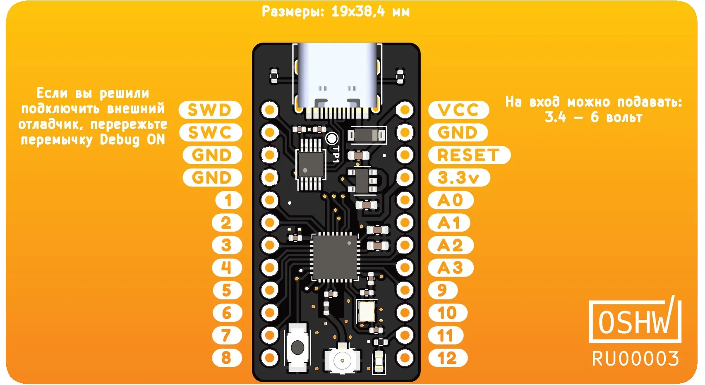
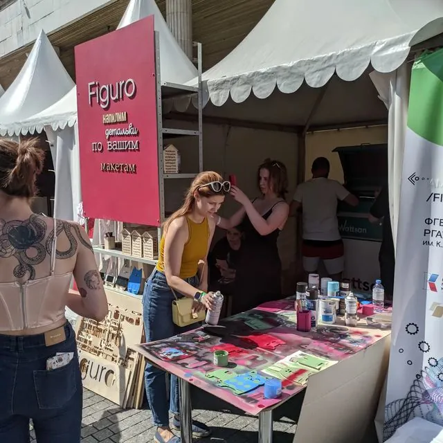
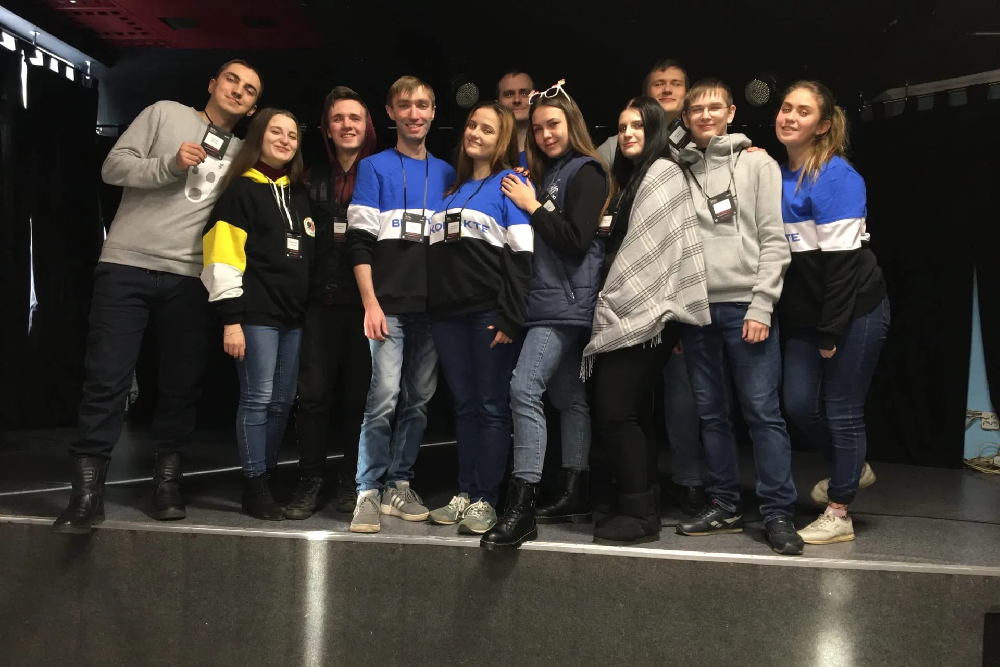

Production: Preparation and verification of production files,
Search for component suppliers and production partners, Development of test systems,
3D printing
Media production: Video editing and photo editing, Blender 3D
Project Management: Tracking progress, Checking task completion on time and within budget
Languages: Russian, English, Belarusian
Work experience
Street Falcon / Backend developer
2024 — now
Brought the service for managing the reboot of the complex to the release version
Moved the fixation processing service from diesel to sqlx
Fixing errors in the operation of services and improving their operation
The board is based on ESP32-S3, in a convenient format for assembly without a breadboard and a bunch of
wires. Allows you to connect Troyka and Qwiic/Stemma QT modules, has built-in charging and a battery
charge
tracking chip
This is an inexpensive board for learning the Rust programming language. The brain of the board is the
nRF52810 microcontroller. The board has a built-in debugger compatible with CMSIS-DAP v1, based on the
CH554
microcontroller

Participation in events
Figuro stend (Geek Picnic 2022)

DevTime 2020 Hackathon

In 2019 I was in the role of a participant, and in 2020 I was in the role of one of the
organizers, it was cool 😄
Education
Kemerovo State University, Kemerovo
Secondary Technical Faculty, Applied Computer Science, end 2021